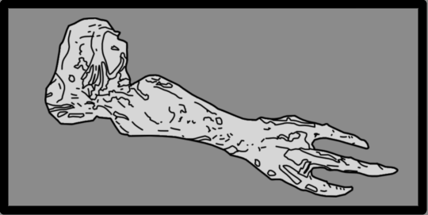
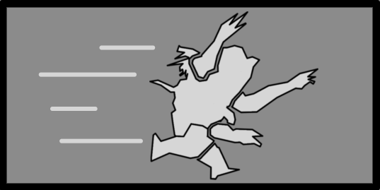

肉瘤体
Fleshmob
基本信息
描述
An amalgamation of 无票者 corpses, this 大 光能者 单位 specializes in 关闭 quarters combat and 充能次数 at 绝地潜兵 to 攻击.
阵营
光能者
最低难度
体型级别
大?
技术信息
游戏版本
the 肉瘤体 is an 光能者 敌人 in 绝地潜兵 2. It is a hulking monstrosity comprising 几个 无票者 fused into 每个 other.
生成[编辑 | 编辑 来源]
Fleshmobs spawn naturally throughout the map near POIs, in patrols, and via 敌人 增援. Their 数量 in a given spawn 条件 增加 with 更高 difficulties.
在……的星球上 
 subfaction is active, the Fleshmobs are completely absent.
subfaction is active, the Fleshmobs are completely absent.
行为[编辑 | 编辑 来源]
Fleshmobs lumber aimlessly throughout the map alongside 无票者 and 监视者, can be found guarding certain areas, or appear via 增援. Upon detecting 任何 超级地球武装部队 资产 or 绝地潜兵, based on their 当前 proximity, Fleshmobs will initiate one of three behaviors:
- <15 米: Slowly walk toward targets and swipe at them when in 射程.
- 15-30 米: Enter an 激进 陈述, moving quicker toward targets whilst constantly flailing their numerous 手臂 around, knocking 返回 绝地潜兵 and destroying nearby objects.
- 30+ 米: Perform a 短 windup in which they roar with their 手臂 spread out and 开始 charging at their 目标 at 高 速度, similar to a 强袭虫. This 布娃娃 and heavily damages 绝地潜兵.
结构解析[编辑 | 编辑 来源]
| 部件名称 | 生命值1 | 护甲值2 | 耐久2 | 主血量占比3 | Overflow 便帽?4 | 构造5 | 致命? | ExDR6 | |
|---|---|---|---|---|---|---|---|---|---|
| 主体 |
5,000 | 40% | - | - | 无 | 是 | 0% | ||
| 头部 Chunks (6) |
400 | 25% | 150% | 否 | 无 | 否 | 25% | ||
| 胃 Chunks (2) |
400 | 40% | 100% | 否 | 无 | 否 | 25% | ||
| 手臂 (4) | 200 | 40% | 25% | 是 | 无 | 否 | 100% | ||
| 腿部(2) | 400 | 40% | 100% | 否 | 无 | 否 | 25% |
Disclaimer: 每个 highlighted 部分 with a 数量 has its own 生命值. Parts without a 数量 分享 生命值 pools.
1) Parts with their HP listed as "Main" do not have their own individual 生命值. 全部 造成伤害 to these parts is transferred to the 敌人's 主生命值 pool.
2) Refer to 护甲 values and 敌人 耐久度 as defined in 伤害 for 更多 information.
3) 造成伤害 to a 部分 will also be transferred in 部分 or in full to 主生命值. If 套装 to 0%, 否 伤害 is transferred.
4) If 套装 to "是", 伤害 transferred 对主血量 is capped by the combined 生命值 and 构造 of the 部分.
5) 构造 acts as a secondary 生命池 that, 一次 Main or 肢体 生命值 has been depleted, 5月 decay. The first 数字 is the 全射 构造 and the second is the 衰退速率. If 套装 to 0/s there is 否 decay and the 构造 behaves as extra 生命值.
6) ExDR means 爆炸 伤害抗性, and can 射程 from 0 to 100%. If 套装 to 100%, the 肢体 cannot take 爆炸伤害; The 爆炸伤害 will instead 目标 Main. Refer to 伤害 for 更多 information.
- Note: This 机械师, known as Affected By 爆炸 can only occur 一次 per 爆炸, regardless of 100% ExDR parts hit, and the 爆炸's 护甲穿透 must 比赛 or exceed 主体护甲 to deal 伤害 对主血量. However, if the same 爆炸 has already damaged Main, this 机械师 will not trigger.
武器配置[编辑 | 编辑 来源]
Swing and Bludgeon

全部 Fleshmobs 通常 have 庞大 appendages one can 呼叫 "手臂". It 使用次数 them to bludgeon, rip or 粉碎 beyond recognition 任何 living being that it happens to see.
| 属性 | 数值 | |
|---|---|---|
| 50近战伤害 65耐久伤害 | ||
| 3/0/0/0 | ||
| 近战 | ||
| 近战 | ||
| 30 | ||
| 20 | ||
| 30 | ||
Rampage

Fleshmobs, seething mounds of 骨头 and blubber, will 经常 冲锋 at the nearest 敌人, using their 巨大 重量 to trample infantry to 粘贴 and 砸碎 aside 载具 as if they were toys.
| 属性 | 数值 | |
|---|---|---|
| 30 冲击 (Initial 冲锋) 5 冲击 (Extra Hits) 25 耐久 (Initial 冲锋) 5 耐久 (Extra Hits) | ||
| 3/0/0/0 (Initial 冲锋) 5/0/0/0 (Extra Hits) | ||
| 近战 | ||
| 近战 | ||
| 30 (Initial 冲锋) 30 (Extra Hits) | ||
| 60 (Initial 冲锋) 0 (Extra Hits) (Initial 冲锋 布娃娃) | ||
| 35 (Initial 冲锋) 0 (Extra Hits) | ||
战术信息[编辑 | 编辑 来源]
- The Fleshmob is an incredibly 耐久 敌人 that relies on pure 每秒伤害 due to its 非常 大 生命值-pool and having 否 致命 parts.
- The upper 头部 flesh chunks of the flesh-mob's 身体 传输 150% 伤害 对主血量. As overkill 伤害 can 传输 through these heads, 高 阿尔法 伤害 应用程序 to these 头部 hit-zones can 结果 in significant boosts in 伤害 applied. This is 最多 applicable on 武器 such as the VG-70 Variable on 全射 模式 where a 单个 well aimed 齐射 can 'one-射击' the Fleshmob.
- When factoring the 25% 耐久度 and 150% 伤害 倍率 of the Fleshmob's 头部 flesh chunks, a Variable in 全射 模式 would deal 5,047 伤害.
- The Fleshmob is 免疫 to flinching via gunfire and has an 极其 高 硬直 抗性 that cannot be matched by 任何 武装配置 武器.
- Destroying 全部 the Fleshmob's heads will not instantly 击杀 it, but it does deal bonus 伤害 to the main 身体, accelerating its death.
- The Fleshmob has incredibly 高 stun 抗性. This 抗性 is pushed even further during its 冲锋 陈述; the only armaments that can stun a Fleshmob during this 陈述 are the 轨道武器 EMS 打击 and G-109 Urchin.
- Whilst not charging and with 否 超级地球武装部队 资产 within 15 米, the Fleshmob can be stunned by the SG-20 Halt (Stun 弹药) and 弧度-3 电弧发射器.
- the G-109 Urchin 手榴弹, when stuck on a Fleshmob, is able to interrupt a 冲锋 and stun it for almost a full 手榴弹 stun 持续时间 时间; after the last 手榴弹 爆炸, the Fleshmob will 继续 its 冲锋 unless the 绝地潜兵 did not 出击 to the 侧面 to cancel it.
- The Fleshmob has incredibly 高 stun 抗性. This 抗性 is pushed even further during its 冲锋 陈述; the only armaments that can stun a Fleshmob during this 陈述 are the 轨道武器 EMS 打击 and G-109 Urchin.
- Breaking a Fleshmob's 手臂 disables its swing 攻击, forcing it to resort strictly to 蓄力攻击.
- Breaking its 腿部 will not slow it down or disable its 冲锋.
- 高-伤害, 爆炸, and shrapnel 武器 are the 最多 有效 at 应对 Fleshmobs. Examples include the RL-77 空爆火箭弹发射器, AC-8 机炮 (Flak 弹药), and 轨道空爆攻击.
- While slightly 更少 致命, the GL-21 榴弹发射器 can 击杀 a Fleshmob in 4 shots.
- the StA-X3 W.A.S.P. 发射器 possesses 高 爆炸伤害 and can 击杀 a Fleshmob in 4 shots. With 完美 精度, one 弹匣 can 击杀 a Fleshmob and severely 削弱 a second.
- For primary 武器, options include the R-36 Eruptor and CB-9 Exploding Crossbow.
- The lack of 护甲 and the 大 尺寸 of Fleshmobs enable 许多 高 速率-of-火焰 (ROF) 武器 such as the MG-206 重机枪, MP-98 Knight, PLAS-1 Scorcher, and AR-23A 解放者 卡宾枪 to excel dealing 大 数量 of 连射-伤害.
- 毒气 武器库 can be particularly 有效 as it can divert its attention away from 绝地潜兵, even while charging.
- 火焰伤害 武器 are 非常 克制 it due to its x1.80 火焰伤害 弱点.
- 点赞 other 大 敌人, Fleshmobs are completely 免疫 to 冲击 from the M-102 Fast 侦察 载具. Running into one will 制止 the 载具 and 有时 deal enough 伤害 to make the FRV 爆炸.
- The Fleshmob has a unique 攻击 动画 that flips the FRV 好处 down when the 载具 is too 关闭 to it.
- While charging, The Fleshmob will 继续 to chase the FRV even after 绝地潜兵 have exited the 载具, this can be a 有用 diversion in 一些 situations.
- You can 出击 out of the way of a Fleshmob’s 冲锋. Please beware that it can still 偶尔 hit you after dodging.
图集[编辑 | 编辑 来源]
- Another 查看 of the Fleshmob.
- The Fleshmob when approached from behind.
- The Fleshmob performing its roar before charging.
琐事[编辑 | 编辑 来源]
- A day before its 官员 release, the Fleshmob was teased by 少校 真相, an Arrowhead affiliate roleplaying as an in-宇宙 社交 媒体 user, who posted 摄像头 footage[1] of a Fleshmob roaming the streets of a 拓殖地.
- Fleshmobs are the only 大-级别 敌人 that spawns on
 简单.
简单. - What appears to be a cow skull is embedded into the 正面 of the Fleshmob. This 5月 be a 参考 to the common trope of 外星生物 abducting and experimenting on cows.
参考[编辑 | 编辑 来源]
- Teaser of the Fleshmob
已知问题[编辑 | 编辑 来源]
- As of version 1.003.000, a bug affects Fleshmobs which causes them to phase through 地形 and appear at the topmost geometry through walls. This is 最多 noticeable in Megacity biomes where there are 许多 sharp angles present in map geometry.
变更历史[编辑 | 编辑 来源]
补丁
描述
1.006.202
2026-04-28
变更
- 已增加 耐久伤害
- 耐久伤害 of Swing and Bludgeon 已增加 by 25
修复
- Fleshmobs are 否 longer able to clip through various objects when charging.
- Fleshmobs now can deal 伤害 to 载具.
1.004.100
2025-10-23
变更
- 索敌 the faces deals extra 伤害 to its 主生命值, effectively creating 弱 spots
- 传输 对主血量 已增加 from 100% to 150%
- 主生命值从6,000降低至5,000
- 最多 生命值 zones are slightly 更多 耐久
- Main 耐久度 已增加 from 25% to 40%
- 手臂 耐久度 已增加 from 25% to 40%
- 腿部 耐久度 已增加 from 25% to 40%
- 胃 & 更低 返回 chunks 耐久度 已增加 from 25% to 40%
- Slightly 更少 易受 火焰 to 平衡 生命值 减少
- 火焰伤害倍率 已降低 from 200% to 180%
未记录变更
- Slightly harder to 套装 on 火焰
- 最小 ignition threshold从4提升至4.5
- 电弧伤害 倍率 已降低 from 200% to 180%
1.003.000
2025-05-13
Addition
- 已添加 to the 游戏.
装甲兵 • Brawler • 机械统帅 • 火箭 奇袭者 • 特攻 奇袭者 • Marauder • MG 奇袭者 • 狂暴者 • 蹂躏者 • 火箭 蹂躏者 • 重型 蹂躏者 • 侦察纵步者 • Reinforced 侦察纵步者 • 巨型者 Obliterator • 巨型者 Scorcher • 巨型者 Bruiser • War Strider • Annihilator 坦克 • Shredder 坦克 • Barrager 坦克 • 炮舰 • 运输舰 • 移动工厂